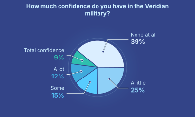
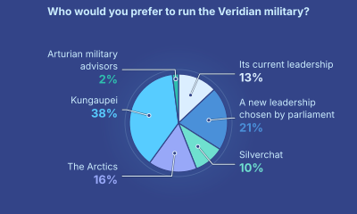
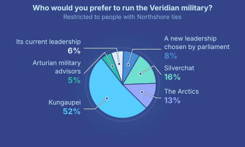

Gladias heard a knock on the door of his government hotel room. Before he could respond, he heard a buzzing sound, and the door opened.
Seila walked in through the door.
"I'm so sorry, Seila", Gladias said almost immediately with a sad expression on his face. "I don't think this plan is going to work."
"I've failed our whole family. We know where Febric and Hreda are, now we know where Lily is, but there's no path to rescuing any of them - except if the Arctics conquer us completely."
Seila walked up to Gladias and hugged him.
For a few moments, neither of them said anything. Then she stepped back and her face broke into a smile.
"So I have a new idea."
Gladias's eyes perked up.
"What is it?"
"So what we learned yesterday is that the judges do not feel comfortable doing something that they perceive as being very undemocratic. So I have a solution. We make it democratic."
"What, like we hold an election tomorrow?"
"In a sense, exactly."
"While you were in Dzego, Mov and I started making our way up the ladder in Silverchat, talking to people there. We were not too successful at getting their attention at first. Verdow joining in about ten days ago helped a lot, but even then they didn't take us too seriously. But on the day the Kungaupei rescued Tafindel, I took a risk: I told them something interesting military-wise would happen a longhour in advance. And then of course it did. So now, they are listening. And I have a plan for what to ask them."
"Silverchat has a polling feature. You can burn zipcoins - well, pay zipcoins to the company - and it lets you automatically ask a question to a large cross-section of people on the platform. The more zipcoins you burn, the more people it polls. So what we'll do is, ask a lot of people a bunch of questions about how they feel about various Veridian and other government institutions, and other hypothetical scenarios."
"We'll include 'do you think the parliament represents the people?' and 'how would you feel if Veridia's military was run by the Dzegojan people who rescued the Redshire president's son?'. But we include that alongside hundreds of other decoy questions. That way, the Arctics won't know what's going on."
"For the responses to be genuine and well thought out, you need a high priority level, which I imagine would require paying a lot of zipcoins. And for this to function as a social signal with strong legitimacy, there must be common knowledge - everyone in Veridia must know not just that the poll was made and what the results are, but also that everyone else knows that the poll was made and what the results are, and also that everyone else knows that everyone else knows, and so on. That would require a big chunk of the entire population to see the poll. So we would have to pay a lot of zipcoins."
"Nine hundred thousand zipcoins was my estimate."
"Do we have that many?"
"Nope. All our savings combined, including Mov, adds up to only half that."
"But here's the trick. We don't need to pay. We convince Evelor, the founder of Silverchat, to do it himself, through the company. Then they can set the breadth and the priority as high as they want - they get a hundred percent of the fee back."
"Wait, can't they just do it manually at zero cost?"
"Their platform works by publishing proofs onto a cryptographic network every time the set of readable messages is updated. So there's literally no way for them to break the rules - if they tried, the proof would fail to verify, and the viewers' clients would automatically reject the messages as invalid. The only thing they could do is publish a new algorithm hash, but that would come with a twenty-day delay."
"And they get one hundred percent back? No sales taxes?"
"With the latest rubric changes, given how well Silverchat has been behaving with its algorithmic transparency - the exact proof mechanism that doesn't let them just directly backdoor and break their own rules - and interoperability, respecting users' privacy, cooperating with researchers, their taxes have dropped to zero."
"Then let's see what Evelor thinks!"
Gladias, Seila and Zei walked forward together along their usual path through Kalimar, covered with trees and surrounded by stone houses on both sides. They had taken a black car most of the way there as a security precaution, but cars could only go up to the border of the car-free zone. Thus, they had no choice but to go the last few hundred meters on foot. Hopefully the privacy robes will suffice, Gladias thought.
A cold breeze blew at them from behind. The cold energized them just as the wind pushed them forward, and they began to walk forward faster.
"Right turn here", Seila whispered through her neck band. By this point, she had become almost as accustomed to having all of her conversations through neck bands as Gladias had been.
They turned right, onto a smaller path. The path continued straight for about a hundred meters. At first, there were stone houses on both sides. After about fifty meters, the houses gave way to what seemed like a deep forest. And after a hundred meters, they could see in front of them what looked like a small hill.
The path sloped downwards, and led to an entrance door to what seemed to be the inside of the hill. Yet another one of those buildings that pays almost no land taxes, Gladias thought. By this point, Veridians had come close to perfecting the art of living and working and putting complex structures into a forest in such a way that the same patch of forest would seem untouched from only a hundred meters away.
Zei marveled at the sight, and his mind jumped immediately to comparing it to the mountain pyramids in Dzego. In Dzego, he thought, they crafted natural mountains into pyramids, and made nature seem like the work of man. In Veridia - or at least in the Kalimar district of Meldan - they made what was quite possibly an entirely manmade hill look like nature. Dzego could learn from the Veridian style, he thought. It's probably even better for protection.
Seila tapped her hand device against the green circle beside the door, and the door opened.
She led the three of them down a path: turning left, then right and up a slope, then right again, then up a staircase. Finally, she opened another door, and led them up a staircase into the middle of a circular area from where they could see the open sky. They were at the top of the hill, Gladias and Zei realized.
They turned around. Another man, wearing a privacy robe without the hood or the face covering, was already there.
"I'm Evelor", he said. "Nice to meet you."
"I'm Gladias. It's a pleasure to meet you too."
"And I'm Zei."
Evelor pressed a button, and a roof started to close above them. After about ten ticks, the roof was completely closed.
"Just for privacy", Evelor said. "Feel free to take off your robes. Also, would any of you like a water or a tea?"
"I'll have a tea", Gladias replied.
"I'll have a tea too", Zei added.
Seila looked around briefly. "Then I guess a tea for me as well."
"Sounds good, four teas it is. The robot will be up shortly."
Evelor sat down on a bench pressed against the safety railing behind the opening that the staircase emerged from. He gestured at the circular bench that was all along the circumference of the room. "Please, sit down."
They took off the hoods and face coverings from their privacy robes, and sat down.
"So, Seila, you mentioned to me that you had an idea for what Silverchat can do to make the whole Veridian government less stupid", he blurted out with a tone of blunt honesty.
"Yes, I do."
"Basically, I want to do a poll. I had Emerald come up with about a thousand questions, I reviewed them. Some about how you feel about the present, some about possible futures. A small fraction of the questions are getting at the thing that we actually care about - replacing the military even if the parliament doesn't want to - and the rest are decoys."
Zei winced slightly. Seila was volunteering the content of her master plan too quickly, he thought. The Kungaupei would never operate in this way. But maybe Veridian culture is just more trusting - or maybe Evelor had already proven himself to Seila, or even to all of Veridia, to be someone worthy of trust.
"The goal is to create common knowledge that the poll happened and what the results are. If it goes well, then we will have a much stronger argument to take to the judges that this is something that people would actually want, and would not riot against."
Seila showed her hand device to Evelor. Evelor briefly scrolled through the questions, and started reading out loud.
"Who would you prefer to run the Veridian military? A: its current leadership. B: a new leadership chosen by parliament. C: the Silverchat leadership. D: the Arctics. E: the Kungaupei (Dzegojan group that recently rescued the Redshire president's son). F: Arturian military advisors."
"And how much did you want to spend on this?"
"Three million zipcoins. And I was hoping that Silverchat the company could do it itself, because you get paid back a hundred percent anyway."
"Interesting! I would say three million is too much, it would be more than any previous poll or advertisement on Silverchat. It would make the Arctics suspicious that something unusual is up. I would do one million. Still in the top three in terms of spending, but not unprecedented."
"Works for me."
"But there's also another issue", Evelor continued. "If we do this we can help the judges see that making a big change would be popular, and that the people don't see the parliament as being all that legitimate. Or of course we'll learn that we're very wrong in our own judgement of how Veridians think. But this won't convince them that this kind of drastic action would actually work."
"Do you have an idea in mind?"
"Actually, yes. Recently we added a feature, Silverchat Predict, that lets people - or bots - make bets on future events. So far bots have been the most effective-"
"I saw that", Gladias interjected. "Prediction markets are cool. But there's two weaknesses. One is that if the Arctics see the market, they could manipulate it. In theory, any attempt to manipulate creates more incentive for arbitrageurs to come in and profit on average by pushing the price back to where it should be, but it's still very untested how well that actually works in practice."
"There's known results that unless the arbitrageurs are either fully risk-neutral or have infinite money, a manipulator can always force at least some shift in the price. And if the underlying variable is something so unprecedented and unknown - like whether or not we will win the second victory against the Arctics that the world has seen in the past century - that makes a hard case for any arbitrageur to want to come in."
"The second problem is private information. We're confident in the Kungaupei because we know them well and we trust them and we know a lot about what their capabilities are. But if we reveal that publicly, we reveal it to the Arctics."
"Right, both good points. Hopefully we can work on improving that first one over time, but ... right now prediction markets are new. The second one is harder to fix."
"Okay, I have a different idea. We don't use the markets directly. Instead, we take the five bots that have been performing the highest on the leaderboard, and we use verifiable two-party computation to ask them. We create a sort of ephemeral virtual private sandbox, we feed the private information into the sandbox, they feed the bot into the sandbox, and the sandbox only outputs the bot's answer."
Zei saw the opportunity to speak. "Yep, that's just an extension over garbled circuits - you probably want verifiable garbled circuits. Overhead is quite nasty-"
"There's optimizations specific to AI computation. Remember, almost everything inside a large language model is linear. The nonlinear part is necessary for the language to be smart, but it's only a tenth of a percent of the entire computation."
Zei realized that, on this particular specialized topic, he had been outmatched. Looks like in his nine months of studying cryptography he had not managed to become smarter than everyone at everything.
"I see..."
Their conversation briefly paused as they heard a mechanical noise getting louder and louder below them. A few ticks later, they could see the top of the robot, slowly climbing up the staircase with a raising motion and then a sliding motion at each step, carrying four cups of tea on a tray. Once it got to the top of the staircase, it moved toward Gladias to give him his tea first.
"Gladias", Evelor asked. "You seem smart. I have a different question I wanted to ask you."
"What is it?"
"Do you remember Ephelion's debate with Sylka?"
"I do."
"Ephelion said: most of the 'softer' traits in society seem to move in circles. The good creates the seed of the bad, and the bad creates the seed of the good. Disaster to heroism to prosperity to complacency to disaster. Technocracy to democracy to chaos to strongman to technocracy. And so on. The only thing that doesn't behave that way is economic output: growth just keeps compounding on itself. And so we should stop trying to accelerate the thing that goes in circles, and instead just focus on growing economic output. I dislike that argument. It makes me uncomfortable what it implies. But I still can't quite put my finger on what's wrong with it. What do you think?"
"I don't think it's just economic output that compounds on itself, I think many good things compound on each other. Health makes people more productive. Productivity gives people the resources to be better. Education supports both, and health supports education."
"So in other words, the eigenvector that Ephelion talked about includes more than just one single dimension - which is actually what most eigenvectors are like."
"You clearly understand eigenvectors better than I do!"
"Silverchat is a social media website. Eigenvectors are like ... on the first page of the original whitepaper."
Gladias smiled.
"But on the other hand", Evelor continued, "the Arctics do care about health. It's not health with the aesthetic of compassion and love and care that Sylka would want, it's hard metallic longevity clinics, but it's still health."
"Well Sylka would say it's not having a long life that matters, it's having a healthy life."
"Right, but the medieval tales of people drinking eternal life elixirs and then being doomed to lie on the ground forever with all their bones broken are not how any of the longevity science actually works. A longer life is a healthier life by default. The easiest place to stop damage is at the moment when it begins."
"And I guess you'll say the Arctics care about education too. They barely understand music and poetry, but they teach their kids science just fine, and that's the part of education that goes into the largest eigenvector anyway."
"Right."
Gladias could see Seila frowning with discomfort. His mind raced as he tried to come up with other arguments against Ephelion's way of thinking.
"But the Arctics aren't actually maximizing economic output. They're looking to start a war - wars can destroy economies for decades. Their attempt to eliminate anyone in Dzego who goes too far in advancing science and technology, that's not maximizing economic output either - quite the opposite. They're not trying to maximize economic output. They're trying to maximize the economic output that's under their control, and destroy everything else."
At that point, Zei spoke up.
"There is this underlying model that Ephelion is implying, where there's a vector that's shooting outward toward infinity, and the faster it goes toward infinity the faster everyone is happy. But that's not how I see the world at all."
"The world that I am seeing is a fragile world. It did not use to be this fragile. In the past, communication was limited and transmission of authority was limited. Any empire united for long enough would eventually fall. The world was reversible. But today, with our modern robots and modern surveillance, if anyone manages to take over and consolidate control across the whole world, they could lock their power in. Irreversibly. Forever."
"If the Arctics win, a certain kind of entropy - the dimensionality of the space of humanity's future possibilities - would be permanently constricted. From that point forward, the only possible future worlds would be Arctic worlds."
"And that's not the worst that can happen. If the Arctics, or anyone else, make a mistake with one of their superweapons, and no one else has the means to resist it, they could destroy the living world entirely."
"Eventually, the world will become reversible again. We will be able to travel between the stars, and our civilization will become too big to completely control or completely destroy. But until that happens, we are in a fragile place, and if within the next decade it all gets multiplied by zero forever, the Arctics will be the reason why it happens."
"I have a simpler answer", Seila added. "All these arguments about the far future, they're hard to predict. And it's really easy to convince yourself that one path is right, and come up with really smart math to justify it, if that's the path that you already know you want to take. But there is one thing that's easy to predict: if the Arctics conquer Veridia, the war may kill hundreds of thousands or millions of our people, and the Arctics will destroy the beautiful world that we know and cherish. To me, that's already enough to be worth fighting against. And the beauty of our world and our countries and our friendships, that's already enough to be worth fighting for."
"All good answers", Evelor replied. He took a sip of his tea and sat back in his chair, pondering.
3724 Frostime 8
Gladias, Seila, Zei, Bai, Verdow, Den and Mu were all sitting around a table inside a meeting room in the government-run hotel. Projected on a wall in front of them was a timer, counting down the ticks until the questionnaire on Silverchat would get published. At that moment, the remaining time was 150 ticks.
"Are you all done submitting your information into the package for the bots?", Seila asked.
"Just finished my part", Den replied.
"Remember, it's a bot. It doesn't need any amazing presentation and polish. If you think of something else to say or dump in, just throw it in."
"I hope you and your bots reviewed the cryptography well, Zei. I'm entrusting a lot of our military secrets to it."
"There's a machine-checkable mathematical proof that the garbled circuit algorithm satisfies the standard correctness and privacy properties. The proof is end-to-end, it covers everything all the way down to the operating system and even the hardware. I read the statements it proves, and I asked Emerald and two other AIs to check it. It's quite solid. Zero information leakage unless hashes are broken, and if that happens we have much bigger problems."
"I checked too", Mu interjected. "I used a different approach, just in case the proof system or the definitions have somehow been broken for over a decade and nobody noticed. I had Emerald read the original academic papers and write its own implementation, and then had a fresh instance read through that code and the original side by side, and look at every difference, see which side is right. Evelor's code is flawless."
"It's starting in fifty ticks!"
"Not going to imitate the Minpentai announcer voice this time?", Bai joked in response.
"MU GU GEI HUI ZIU FA", Zei replied in a voice exaggerating the stereotypical robotic tone for comic effect.
They sat around the table and waited.
"LE MU GEI HUI ZIU FA", Bai exclaimed.
"Hey!", Zei replied.
"Beat you!"
They kept watching the countdown. As soon as it hit ten, they started chanting in unison:
"PA GU ... SO ... BI ... ZE ... HA ... MU ... FO ... SHI ... LE ... PA ... HUI ZIU FA!"
The screen split into two views. On the left, there were five parallel progress bars showing the computation of five garbled-circuit executions with the five bots. On the right, a large collection of pie charts, one for each question that had been asked. Votes quickly began coming in.
"Let's zoom in to the ones we care about", Verdow offered.
Zei nodded, and clicked on one of the pie charts.

"As I expected. Now let's see how people think we should solve this problem."

"Restrict to people who are from Northshore."
"Wait, did we set it up to provide that level of granularity? Votes are anonymous, we have no way to tell who sent each one."
"We did break it down by age, self-declared most recent senator votes, province, and a couple of personality type axes inferred by a large language model."
"Ah, found it."

"Congrats, Evelor", Verdow said wryly. "Seems like you are more fit to run Northshore than the actual parliament."
"I'm a bit scared of these results now", Seila interjected. "Haven't we just given the game away to the Arctics?"
"I think it's okay", Mu replied. "We asked many different questions in the poll. One of them literally has twenty percent saying that we should fund recovering Northshore by legally transferring all of its government-owned territory to Hydrafill and letting them figure it out."
"The lawsuit is something that the Arctics will notice and watch, of course. We should delay it by a few days to make it not look too coordinated. But regardless of what we do, we will have made it clear to everyone - including the Arctics - that Veridians recognize that there is a big problem. It's the details of the solution that we need to hide."
They paused briefly, and stared at the progress bars.
"Okay, that will take a while. Let's look at some more pie charts."
A robot entered the room, bringing each of the participants a cup of tea.
"And ... done", Zei exclaimed triumphantly.
Five icons representing the responses from five bots appeared onscreen. Zei clicked on the first one.
Executive summary:
Under any 'ordinary' scenario, meaning either status quo continuation of the Veridian military, or a reorganization led by the Veridian parliament without large outside pressure, the probability that Veridia will hold the same or greater percent of its own territory after one year is 20%.
Under a hypothetical transfer to Kungaupei control, the probability increases to 26%.
The main downside risks involve standard organizational transition costs that are typical of chaotic changes in leadership and replacement of experienced personnel with outsiders.
Probability of successful outcomes is maximized (up to 50%) in cases that involve Kungaupei participation but minimize the disruptiveness of the transition.
Note that above probabilities are for same or greater control in one year. Probabilities of strictly greater control are uniformly much lower.
"Hmm", Verdow muttered.
"Do you think it's reasonable?", Gladias asked.
"The bots definitely have a more conservative temperament than I do, but it's fair."
"The other four are saying vaguely similar things. The most pessimistic one says the chances are the same in the status quo and Kungaupei scenarios."
"Also we have much more data coming in from the votes. It's roughly the same as the results we first saw right when the poll began."
"I guess we have all the data we will get. Let's get ready to file the case in a few days."